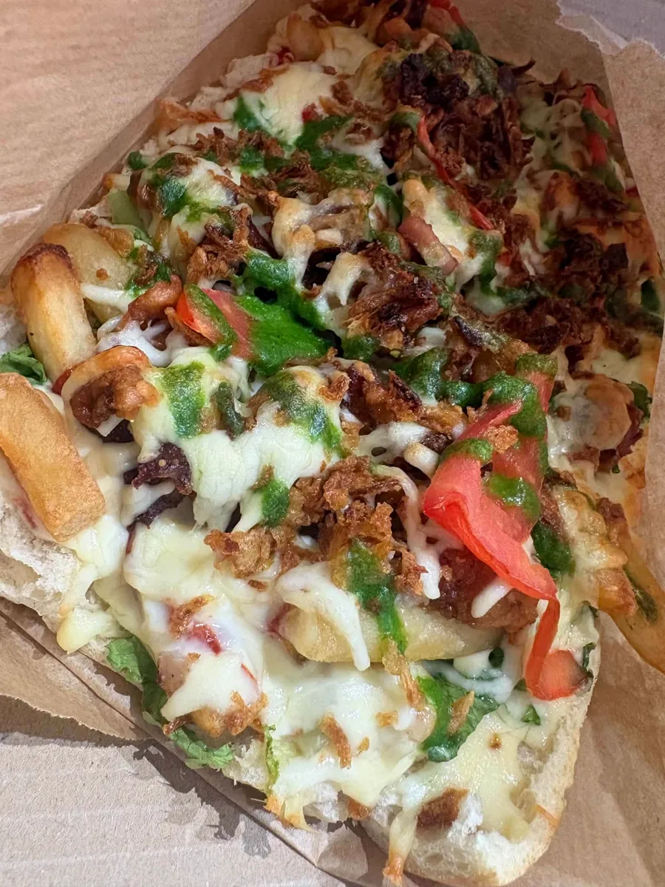
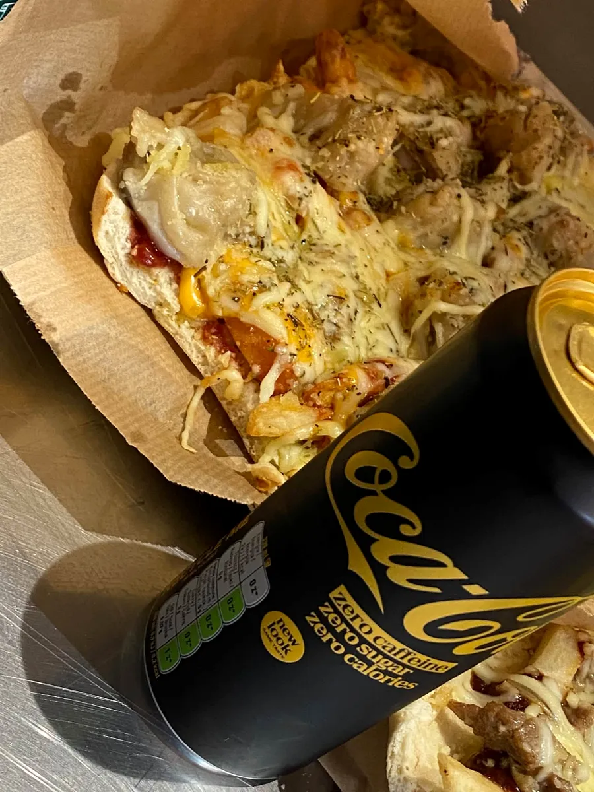
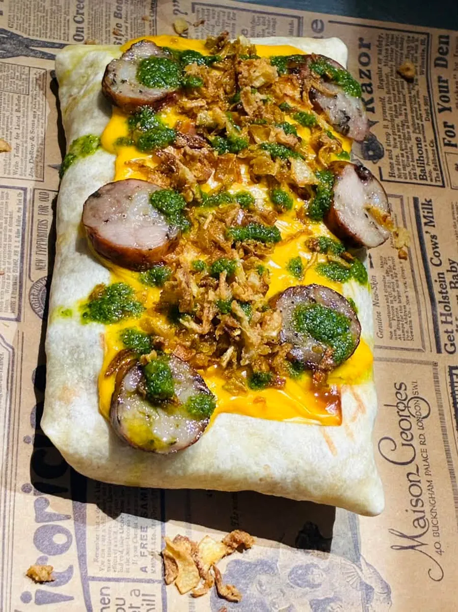
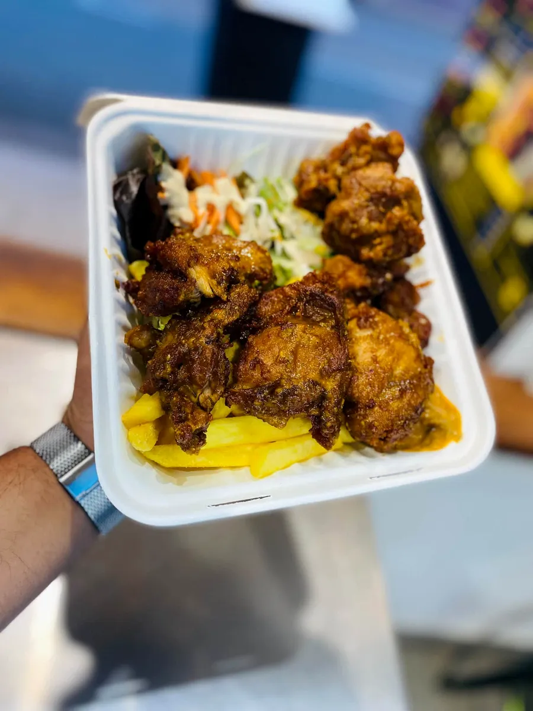
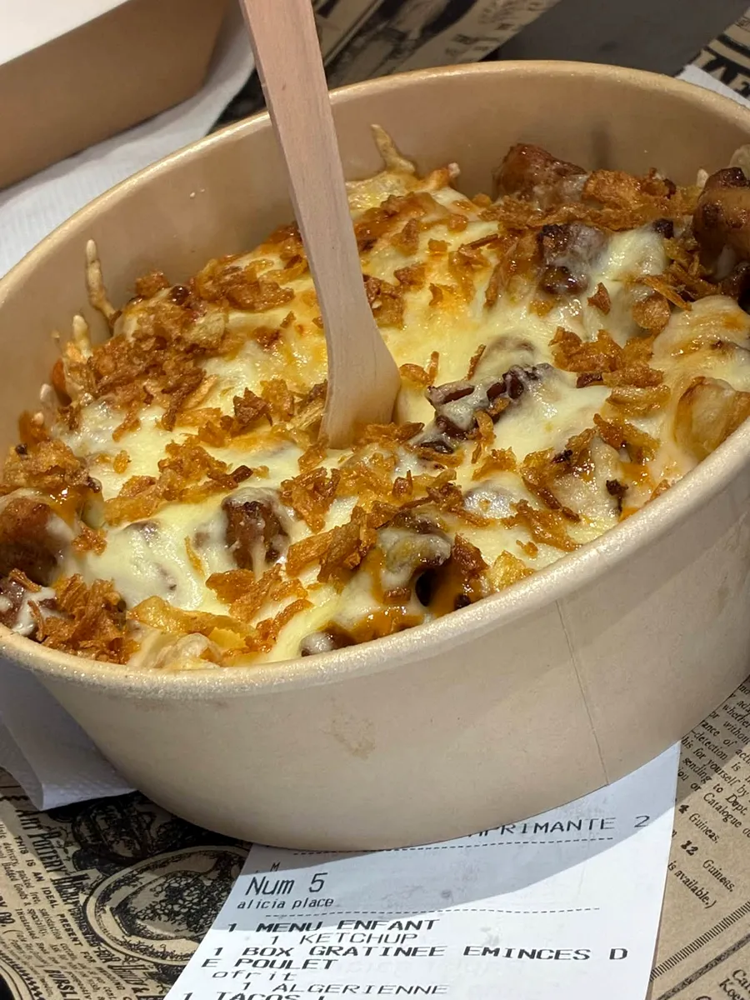
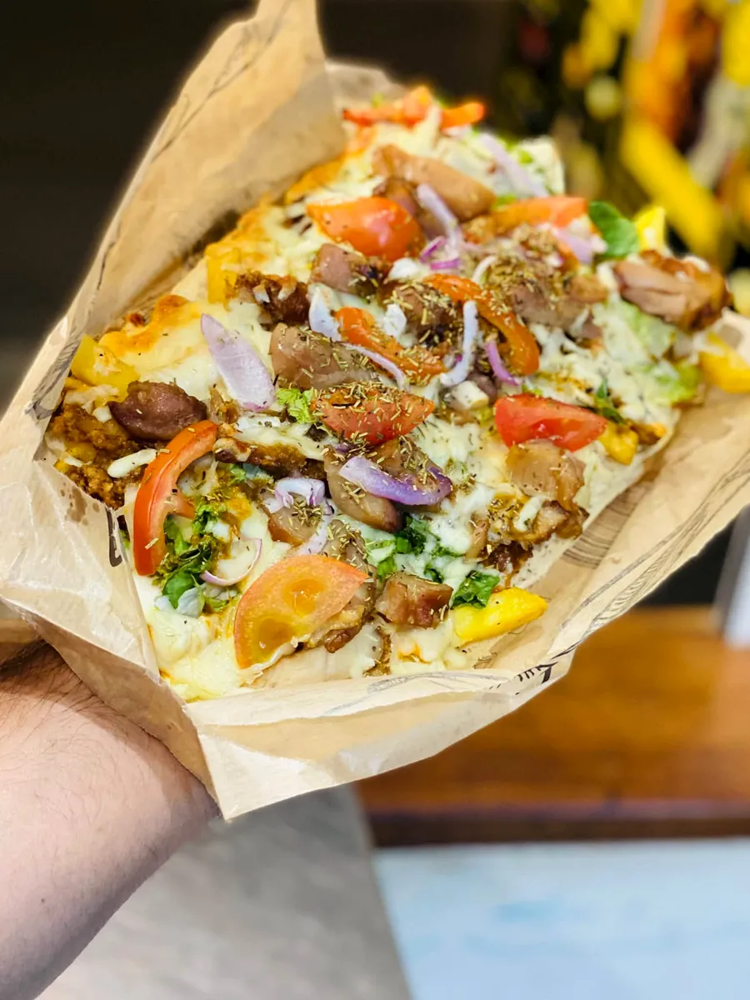
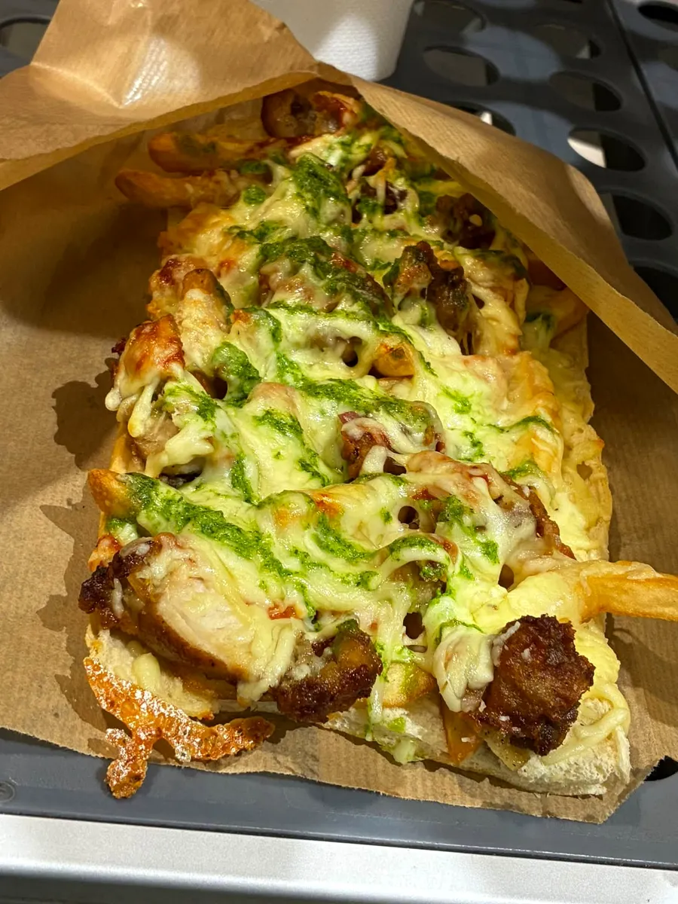

Le Kosa original snack · Saint-Joseph
Tacos classiques ou gratinés, wraps frais, pasta box, sandwichs gourmands : au 2 rue des Pervenches, on cuisine maison.

La carte
Choisis ta formule, ta viande, ta garniture et ta sauce maison : chaque commande est préparée minute.
Tout droit sorti de la cuisine






Saint-Joseph
Le Kosa t'attend au cœur de Saint-Joseph, rue des Pervenches. Un coup de fil et ta commande est lancée.